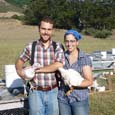

|
Contact Us
|
PRODUCTS
[Chickens] [Turkeys]
CHICKENS
Early Bird Broilers
- Few animals benefit as dramatically as chickens from the improved treatment that comes from a small and pasture-based farm like ours. Moved twice a day at sunrise and just before sunset, our Early Bird Broilers live their lives outside on the rich pastures that surround our farm in the fresh air and sunshine. In addition, the clover, wild grasses, and bugs that add complex and deep flavor to their meat, the chickens’ diet is supplemented with access to feed that is free of anti-biotics and synthetic hormones. For more information about the life of an Early Bird Broiler, click here.
- Price: $3.95 per pound (average 3-5 pounds)
- Availability: Available for on-farm pickup fresh from March to November or frozen year-round
Back to top
TURKEYS
Early Bird Turkeys
- In the world of pasture-raised poultry, the turkey is the reining king of grass eaters. Turkeys are naturally curious and will eat just about as much grass as you can give them. Our turkeys spend their lives roaming freely in a 1/8 acre protected paddock that is moved onto fresh grass every 2-3 days. As a result of their diverse diet and active outdoor life, our Early Bird Turkeys have a balanced ratio of dark to white meat and are superbly tender, juicy, and delicious. For more information about the life of an Early Bird Turkey, click here.
- $3.95 per pound (average 12-18 pounds)
- Availability: Available for fresh on-farm pickup in November
Back to top
|
|  |
(619) 855-9926
P.O. Box 293
Pescadero, CA, 94060
info@EarlyBirdRanch.com
|
|
Our Blog
|
| New Projects and Progeny ...I suppose now we’ve sunk into a monthly rhythm when it comes to blogging. I’d still prefer a weekly post, but our energy levels and access the internet have not really been conducive to such an ambition...[read more] |
|
Our Neighbors
|
|
Pie Ranch: "At Pie Ranch we are creating a more sustainable food system by training emerging farmers and teaching youth about healthy food and communities." And they make really great pie!
www.pieranch.org |
|